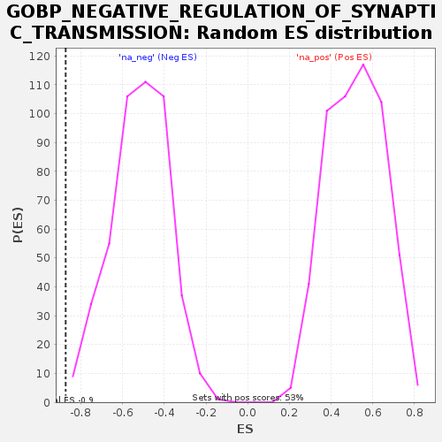

Profile of the Running ES Score & Positions of GeneSet Members on the Rank Ordered List
| Dataset | GEP2_vs_GEP6_residuals |
| Phenotype | NoPhenotypeAvailable |
| Upregulated in class | na_neg |
| GeneSet | GOBP_NEGATIVE_REGULATION_OF_SYNAPTIC_TRANSMISSION |
| Enrichment Score (ES) | -0.87290925 |
| Normalized Enrichment Score (NES) | -1.690917 |
| Nominal p-value | 0.0021321962 |
| FDR q-value | 0.24188215 |
| FWER p-Value | 0.711 |
| SYMBOL | RANK IN GENE LIST | RANK METRIC SCORE | RUNNING ES | CORE ENRICHMENT | |
|---|---|---|---|---|---|
| 1 | AGER | 1305 | 0.000 | -0.2478 | No |
| 2 | STXBP1 | 1854 | 0.000 | -0.3514 | No |
| 3 | IL1B | 2019 | 0.000 | -0.3793 | No |
| 4 | SHANK2 | 2078 | 0.000 | -0.3864 | No |
| 5 | PENK | 2468 | 0.000 | -0.4627 | No |
| 6 | LILRB2 | 2512 | 0.000 | -0.4699 | No |
| 7 | GRIK2 | 2582 | 0.000 | -0.4829 | No |
| 8 | GRIA1 | 2589 | 0.000 | -0.4833 | No |
| 9 | PLK2 | 2684 | 0.000 | -0.5020 | No |
| 10 | PCDH17 | 2955 | -0.000 | -0.5544 | No |
| 11 | ACHE | 3264 | -0.000 | -0.6119 | No |
| 12 | SHANK3 | 3270 | -0.000 | -0.6085 | No |
| 13 | KCNB1 | 3296 | -0.000 | -0.6089 | No |
| 14 | ARC | 4184 | -0.000 | -0.7635 | Yes |
| 15 | GABBR1 | 4730 | -0.000 | -0.7623 | Yes |
| 16 | CD38 | 4737 | -0.000 | -0.6494 | Yes |
| 17 | TNR | 4859 | -0.001 | -0.4492 | Yes |
| 18 | CNR2 | 4971 | -0.002 | 0.0056 | Yes |
